Búsqueda bibliográfica y herramientas de IA
Once plataformas para encontrar, leer y sintetizar literatura científica: las bases de datos académicas clásicas y los agentes de investigación con inteligencia artificial.
Las plataformas de búsqueda académica son fundamentalmente diferentes de los motores de búsqueda generales. Mientras un buscador web indexa páginas de todo tipo, las bases de datos académicas se enfocan exclusivamente en artículos de revistas científicas, tesis doctorales, actas de conferencias, patentes y libros técnicos. Esta guía cubre dos mundos complementarios: las plataformas clásicas que llevan décadas organizando la literatura, y las nuevas herramientas de IA que están transformando cómo buscamos, leemos y sintetizamos el conocimiento.
En esta guía · dos partes
Parte I
Búsqueda clásica
Haga clic en cualquier herramienta del índice o de la barra lateral para ir directamente a esa sección. El contenido completo permanece visible en todo momento.
Los modelos, planes y precios de esta guía se consultaron el 21 de noviembre de 2026 en las páginas oficiales de cada herramienta, enlazadas en cada sección, y cambian cada pocos meses: antes de pagar un plan, revise su página. Los precios están en dólares de Estados Unidos, y algunos planes tienen precio local en Colombia. Donde la página oficial no deja ver el precio, la guía remite a ella en vez de dar una cifra.
1. Google Scholar
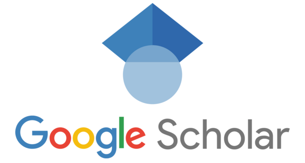
Google Scholar es un motor de búsqueda académico gratuito lanzado por Google en noviembre de 2004. Indexa el texto completo y los metadatos de literatura científica proveniente de una amplia variedad de fuentes: editoriales académicas, bibliotecas universitarias, repositorios institucionales, servidores de preprints y sitios web académicos. Su objetivo es organizar la información académica del mundo y hacerla universalmente accesible.
Cómo funciona el ranking
Google Scholar ordena los resultados como lo haría un investigador: pondera el texto completo de cada documento, dónde se publicó, quién lo escribió y cuántas veces y qué tan recientemente se ha citado (Google Scholar, «Acerca de»). Un artículo muy citado y publicado en una revista reconocida suele quedar entre los primeros resultados.
Novedades de 2025 y 2026
Acceso y costo
Google Scholar es completamente gratuito y no requiere suscripción institucional. Sin embargo, muchos de los artículos que indexa están detrás de muros de pago (paywalls) de las editoriales. Scholar intenta encontrar versiones de acceso abierto (open access) de los artículos: busca en repositorios institucionales, páginas personales de autores y servidores de preprints. Cuando encuentra una versión libre, muestra un enlace directo al PDF.
Uso en revisiones de literatura
Google Scholar es excelente como punto de partida para una revisión bibliográfica. Sus funcionalidades más valiosas:
Limitaciones de Google Scholar
- No soporta truncamiento con asterisco (a diferencia de WoS y Scopus).
- Los filtros de búsqueda son básicos: solo permite filtrar por fecha, idioma, tipo de búsqueda y excluir patentes/citas.
- Los metadatos pueden ser inconsistentes: títulos, autores o fechas con errores por indexación automática sin curación manual.
- No ofrece análisis bibliométrico avanzado (publicaciones por año, top autores, etc.).
Enlace: scholar.google.com
Google Scholar es excelente como punto de partida para explorar un tema nuevo o para rastrear citas de un artículo específico. Úselo para obtener una visión amplia antes de refinar su búsqueda en bases de datos más especializadas como Web of Science o Scopus.
2. Web of Science (WoS)
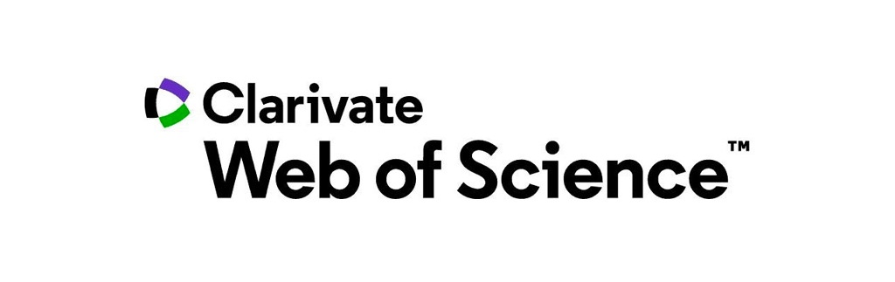
Web of Science es una plataforma de indexación académica de pago desarrollada y mantenida por Clarivate Analytics. Es considerada el estándar de oro para la investigación científica de alto impacto gracias a su riguroso proceso de selección de revistas. Su historia se remonta a los años 1960, cuando el Institute for Scientific Information (ISI), fundado por Eugene Garfield, creó el Science Citation Index, la primera base de datos que rastreaba sistemáticamente las citas entre publicaciones científicas.
Cobertura
Web of Science contiene millones de registros que se remontan hasta 1900, organizados en cuatro índices principales:
IA y novedades
Acceso
Web of Science requiere una suscripción institucional. Los estudiantes de la Universidad de los Andes entran por la página de la Biblioteca. Desde fuera del campus, los enlaces de la Biblioteca pasan por su proxy y piden el usuario y la contraseña de Uniandes.
Búsqueda avanzada
WoS ofrece un sistema de búsqueda avanzada muy potente. Combina campos específicos con operadores booleanos:
TS=: Título, resumen, palabras clave y KeyWords PlusTI=: Solo títuloAU=: AutorSO=: Nombre de la revista (Source)
*: Truncamiento (membran* → membrane, membranes…)?: Exactamente un carácter comodín$: Cero o un carácterNEAR/n: Términos a n palabras de distancia
Enlace: acceso a través del portal de la Biblioteca de la Universidad de los Andes
3. Scopus
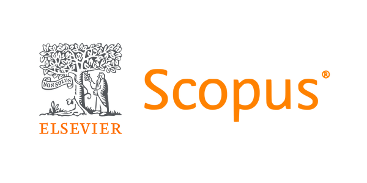
Scopus es una base de datos bibliográfica desarrollada por Elsevier, lanzada en 2004 como competidora directa de Web of Science. Desde su inicio, Scopus adoptó una estrategia de cobertura más amplia, indexando una mayor cantidad de revistas, conferencias y libros. Hoy tiene más de 100 millones de registros, entre ellos más de 404 000 libros y 2,6 millones de preprints, y más de 19,5 millones de perfiles de autor (Elsevier).
Scopus AI
Scopus AI responde preguntas en lenguaje natural con un resumen que cita los documentos de Scopus en que se basa: pregunte, por ejemplo, «¿Qué rendimiento de aceite esencial da el arrastre de vapor de la cáscara de naranja?». Sus funciones, con la fecha de su nota de lanzamiento (Elsevier):
Acceso
Al igual que Web of Science, Scopus requiere una suscripción institucional, y se entra por la página de la Biblioteca. Si Scopus AI no aparece en su sesión, la licencia de la Universidad no la incluye: pregunte en la Biblioteca.
Análisis bibliométrico
Scopus es particularmente fuerte en análisis bibliométrico. Después de realizar una búsqueda, puede analizar los resultados por:
Enlace: scopus.com
4. Comparativa de plataformas clásicas
La tabla resume las diferencias entre las tres plataformas clásicas, con lo que ofrecen en noviembre de 2026:
| Característica | Google Scholar | Web of Science | Scopus |
|---|---|---|---|
| Acceso | Gratuito | Suscripción institucional | Suscripción institucional |
| Cobertura | Muy amplia, sin curación | Selectiva, revistas de alto impacto | Amplia, más de 100 millones de registros |
| Calidad de metadatos | Variable, indexación automática | Alta, curación manual | Alta, curación editorial |
| Búsqueda avanzada | Básica (sin truncamiento) | Muy avanzada (booleanos, comodines, proximidad) | Muy avanzada (booleanos, comodines, campos) |
| Análisis de citas | Básico («Citado por») | Avanzado (Citation Report, h-index) | Avanzado (bibliometría, h-index, tendencias) |
| Alertas | Por correo electrónico | Alertas de citas y búsquedas guardadas | Alertas de citas, autores y búsquedas |
| Exportación | BibTeX, EndNote, RefMan, RefWorks | Múltiples formatos, integración con gestores | Múltiples formatos, RIS, BibTeX, CSV |
| IA integrada | Scholar Labs, en prueba y con acceso limitado | Research Assistant | Scopus AI, con Deep Research |
| Fortaleza principal | Amplitud, gratuidad, facilidad de uso | Calidad, historial desde 1900, Journal Impact Factor | Cobertura amplia y curada, Scopus AI, bibliometría |
| Debilidad principal | Metadatos inconsistentes, sin filtros avanzados | Cobertura más limitada, costosa | Costosa, algunas revistas no indexadas |
5. Estrategias de búsqueda
Saber usar una plataforma de búsqueda es tan importante como elegir la correcta. Las estrategias de búsqueda avanzada le permiten encontrar exactamente lo que necesita en menos tiempo, reduciendo el ruido y aumentando la relevancia de los resultados.
Operadores y técnicas
membrane AND wastewaterwastewater OR "agua residual"bioplastic NOT packaging(fungi OR fungal) AND membrane"reverse osmosis"membran* → membrane, membranes, membranas. Solo WoS y Scopus. ? = 1 carácter; $ = 0-1.Búsqueda por campos específicos (WoS y Scopus)
Limita la búsqueda a partes concretas de cada registro para mayor precisión:
TI=: título del artículo (WoS)AU=: nombre del autor (WoS)SO=: nombre de la revista (WoS)TITLE-ABS-KEY(): título, resumen y palabras clave (Scopus)NEAR/n: términos a n palabras de distancia entre sí (WoS)
Ejemplo: rendimiento del arrastre de vapor de la cáscara de cítricos
Suponga que su equipo busca datos de rendimiento del arrastre de vapor de la cáscara de naranja para la Bitácora 3. Veamos la diferencia entre una búsqueda básica y una avanzada:
rendimiento aceite naranja vapor
Va en español, cuando casi toda la literatura está en inglés; no usa operadores, ni sinónimos, ni truncamiento. Los resultados son impredecibles y poco pertinentes.
TITLE-ABS-KEY(("steam distillation" OR hydrodistillation) AND (citrus OR orange OR lemon OR lime) AND (peel* OR rind) AND "essential oil" AND (yield OR kinetic*))
Incluye sinónimos (OR), truncamiento (*), frases exactas y búsqueda en título, resumen y palabras clave.
Recomendaciones prácticas
6. ChatGPT (OpenAI)
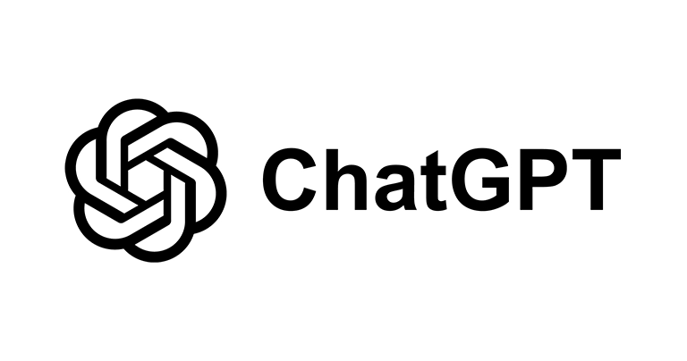
ChatGPT, de OpenAI, es el asistente de IA más usado del mundo. Para la investigación académica busca en la web, lee los documentos que usted sube y arma informes con citas.
Modelos
Desde el 7 de octubre de 2026 el modelo por defecto es GPT-6: en los planes Plus, Pro, Business y Enterprise corre con GPT-6 Sol, y en Free y Go con GPT-6 Luna (OpenAI). Los modelos anteriores siguen en el menú mientras OpenAI no los retire; los cambios quedan en sus notas de versión.
Planes
| Plan | Precio (USD al mes) | Qué trae |
|---|---|---|
| Free | 0 | GPT-6 Luna con límites y tres archivos por día; anuncios en algunos países |
| Go | 8 en EE. UU.; en otros países, precio local | Más mensajes y archivos, con anuncios; disponible en todos los países donde funciona ChatGPT |
| Plus | 20 | GPT-6 Sol, más investigaciones profundas, sin anuncios |
| Pro | Desde 100 | El uso más alto y GPT-6 Pro |
No hay descuento para estudiantes de pregrado: ChatGPT Edu es un plan que contrata la universidad (OpenAI, ChatGPT Go; ChatGPT Plus).
Deep Research
Deep Research busca de forma autónoma en la web durante varios minutos, lee las fuentes y entrega un informe estructurado con citas; se le puede indicar en qué fuentes confiar. Cuántas investigaciones admite depende del plan: limitado en Free y Go, ampliado en Plus y máximo en Pro (OpenAI). Sirve para tener una visión panorámica de un subtema; las fuentes del informe se revisan una por una.
Modo estudio
El modo estudio, en todos los planes, no da la respuesta de una vez: pregunta, guía y comprueba lo que usted entiende, y sirve para preparar un quiz o un examen. En 2026 se sumaron módulos de aprendizaje interactivos y tarjetas de estudio (OpenAI).
Archivos y proyectos
Cada archivo puede pesar hasta 512 MB. Un proyecto guarda los archivos de un trabajo para que todas sus conversaciones los vean: 5 en Free, 25 en Go y Plus y 40 en Pro (OpenAI). Para el reto, un proyecto con las lecturas y los artículos de su equipo evita subirlos en cada conversación.
ChatGPT puede inventar referencias que suenan plausibles pero no existen. Verifique siempre las fuentes con Google Scholar, Scopus u otras bases de datos. Nunca cite una referencia proporcionada por ChatGPT sin confirmar que el artículo realmente existe.
Cómo usar ChatGPT para revisiones de literatura
Enlace: chatgpt.com
7. Google Gemini
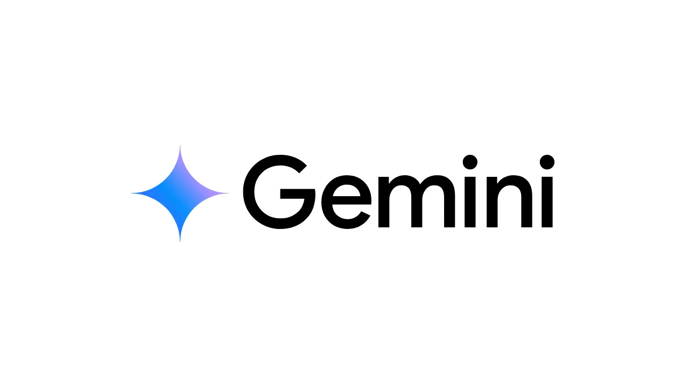
Google Gemini es el asistente de IA de Google, conectado con sus otros productos: Drive, Gmail, Docs y Gemini Notebook. Es multimodal: lee y produce texto, imágenes, audio, video y código.
Modelos
Gemini va en la familia Gemini 4. Sin plan se usa Gemini 4 Hydrogen; Google AI Pro abre Gemini 4 Neon y Gemini 4 Argon, y Google AI Ultra, además, Gemini 4 Carbon, el más capaz (planes de Gemini; Google). Al llegar al límite de un modelo, la aplicación pasa a uno más liviano.
Planes
| Plan | Precio (USD al mes) | Qué trae |
|---|---|---|
| Sin plan | 0 | Gemini 4 Hydrogen, contexto de 32 000 tokens, 15 GB |
| Google AI Plus | 4,99 | Más uso, contexto de 128 000 tokens, 400 GB |
| Google AI Pro | 19,99 | Gemini 4 Neon y Argon, contexto de 1 millón de tokens, 5 TB |
| Google AI Ultra | Desde 99,99 | Gemini 4 Carbon y el mayor uso, 20 TB |
Los límites de uso se renuevan cada pocas horas, con un tope semanal (Google).
Deep Research
Como en ChatGPT, Deep Research arma un plan que usted puede editar, consulta cientos de sitios y entrega un informe con enlaces a las fuentes. Si usted lo autoriza, busca también en su Gmail, su Drive y su Chat. Sin plan puede no estar disponible cuando hay mucha demanda (Google).
Gems
Los Gems son versiones personalizadas de Gemini especializadas para tareas específicas. Puede crear un Gem configurado para buscar literatura en su campo, con instrucciones sobre el tipo de fuentes que prefiere, el formato de las citas, y el nivel de detalle de los resúmenes.
Enlace: gemini.google.com
8. Gemini Notebook (antes NotebookLM)
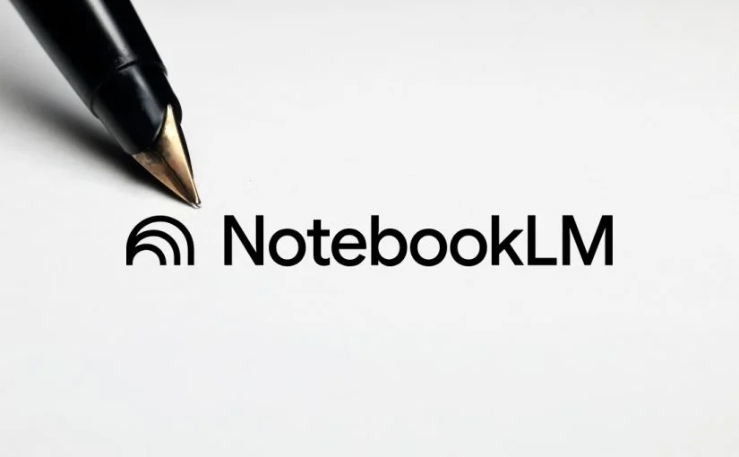
Gemini Notebook es la herramienta de investigación y toma de notas de Google. Se llamó NotebookLM hasta el 16 de julio de 2026; sigue siendo un producto aparte, y sus cuadernos aparecen también en la aplicación de Gemini, sincronizados (Google). Su principio es el source-grounding (RAG, generación aumentada por recuperación): responde solo con las fuentes que usted sube, y eso reduce mucho las alucinaciones frente a un chat general. Por eso sirve para el trabajo académico, donde importa ser fiel al material.
Fuentes, chat y estudio
En la aplicación de Gemini, el mismo cuaderno puede sumar búsquedas en la web; en Gemini Notebook responde solo con sus fuentes, y los resúmenes en audio y en video se hacen allí (Google).
Funciones destacadas para investigación
Límites por plan
| Plan de Google | Cuadernos | Fuentes por cuaderno |
|---|---|---|
| Sin plan | 100 | 50 |
| Google AI Plus | 200 | 100 |
| Google AI Pro | 500 | 300 |
| Google AI Ultra | 500 | 500 o 600 |
Cada fuente admite hasta 500 000 palabras o 200 MB (Google, límites; fuentes). Los límites de chat, audio y video cambian, y Google no los publica en esa página.
Google da un año gratis de Google AI Pro a universitarios de Estados Unidos mayores de 18 años, hasta el 31 de diciembre de 2026; Colombia no está entre los países que pueden pedirlo (Google). Sin plan, Gemini Notebook alcanza para el reto: 50 fuentes por cuaderno son muchos artículos.
Uso en la revisión bibliográfica
Gemini Notebook solo conoce lo que usted sube: no busca en la web por sí solo, salvo con Deep Research. De un video de YouTube solo toma la transcripción. Cada fuente admite hasta 500 000 palabras o 200 MB, y un PDF protegido contra copia no se puede cargar.
Enlace: notebooklm.google
9. Claude (Anthropic)
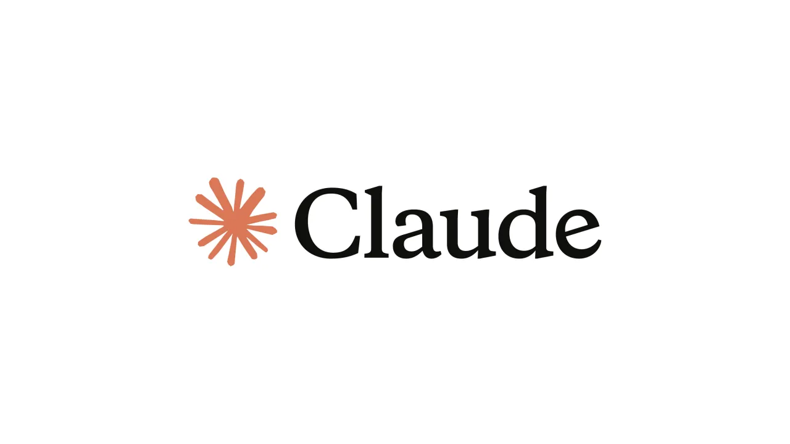
Claude es la familia de modelos de inteligencia artificial de Anthropic, una empresa que pone el énfasis en la seguridad. En el trabajo académico se usa sobre todo para leer y analizar documentos largos, y también busca en la web.
Modelos
Fechas de Anthropic; qué modelo trae cada plan, de sus planes.
Planes
| Plan | Precio (USD al mes) | Qué trae |
|---|---|---|
| Free | 0 | Sonnet y Haiku, búsqueda web con límites diarios, hasta cinco proyectos |
| Pro | 20 (17 con pago anual) | Opus y Fable, Research y más uso |
| Max | 100 | Mucho más uso |
| Ultra | 200 | El mayor uso |
Funcionalidades clave para investigación
Claude es útil para analizar documentos largos: puede subir varios artículos completos a un proyecto y pedirle que compare métodos, extraiga datos o señale contradicciones entre los estudios. Anthropic tiene un plan para universidades con tarifas de descuento; pregunte en la Universidad si lo tiene.
Enlace: claude.ai
10. Perplexity
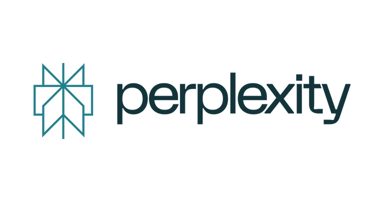
Perplexity es un motor de búsqueda potenciado por inteligencia artificial que combina la capacidad de búsqueda web con la generación de respuestas en lenguaje natural. Su principal diferenciador es que cada afirmación incluye citas a las fuentes, lo que facilita la verificación de la información.
Para la investigación académica tiene un modo académico que prioriza artículos y fuentes académicas, y su Deep Research hace una investigación de varios pasos y entrega un informe con citas. El plan gratuito permite una investigación profunda al mes (Perplexity).
Planes
| Plan | Precio (USD al mes) | Qué trae |
|---|---|---|
| Free | 0 | Búsquedas básicas y una investigación profunda al mes |
| Education Pro | 10 | Todo lo de Pro y el modo de aprendizaje, para estudiantes y docentes verificados |
| Pro | En su página | Más búsquedas e investigaciones profundas, varios modelos de IA |
| Max | En su página | El mayor uso |
Funcionalidades académicas
Education Pro cuesta 10 dólares al mes. La verificación de estudiante se hace con SheerID, y el plan se compra en perplexity.ai, no en las tiendas de aplicaciones (Perplexity). Pregunte en la Universidad si hay un convenio.
Enlace: perplexity.ai
11. SciSpace
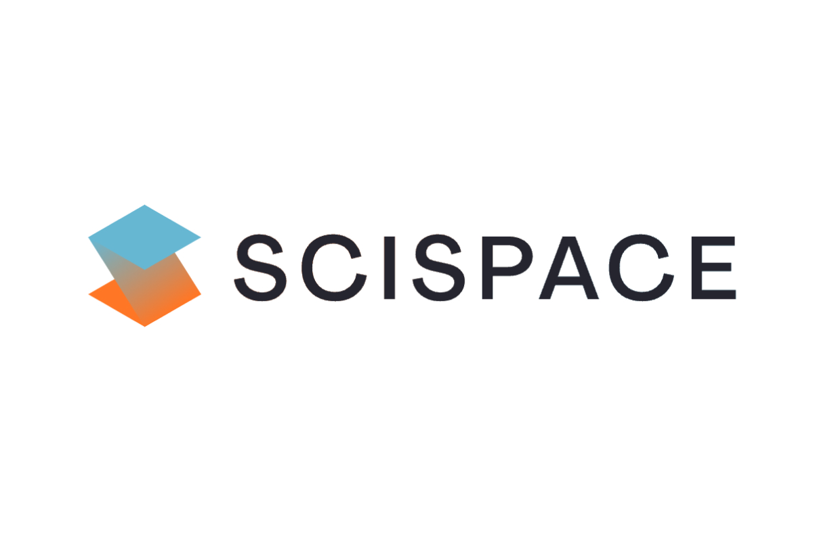
SciSpace (antes Typeset) es una plataforma de investigación con IA para leer, entender y analizar artículos científicos, y para acortar la revisión de literatura.
Funcionalidades principales
Precios
SciSpace tiene un plan gratuito con límites y planes de pago. El precio cambia según se pague mes a mes o por año, y está en su página de planes.
Como todas las herramientas de IA, SciSpace puede alucinar e interpretar en exceso los hallazgos. Verifique siempre las afirmaciones clave contra las fuentes originales. No confíe ciegamente en los resúmenes generados: léalos como un punto de partida, no como un sustituto de la lectura del paper.
Enlace: scispace.com
12. Consensus
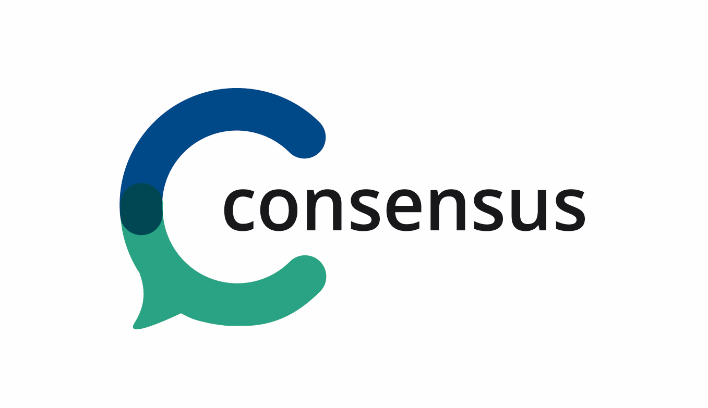
Consensus es un buscador académico con IA que trabaja solo con literatura revisada por pares: más de 400 millones de artículos, tomados de Semantic Scholar, OpenAlex y PubMed (Consensus). No indexa blogs, noticias ni páginas web generales, y por eso sirve para ver qué dice la evidencia sobre una pregunta concreta.
Funcionalidades principales
Planes de Consensus
- Free: 10 mensajes Pro y 3 Deep Searches al mes.
- Pro: mensajes ilimitados y 15 Deep Searches al mes.
- Deep: 200 Deep Searches al mes.
- Estudiantes: 40 % de descuento por 12 meses con un correo de estudiante verificado. Los precios en dólares están en su página.
Ejemplo de uso para Ingeniería Química
Pregunta: «¿La reducción de tamaño de la cáscara de cítricos aumenta el rendimiento de aceite esencial en la hidrodestilación?»
Consensus analizará la literatura peer-reviewed y mostrará:
- Qué parte de los estudios encuentra un aumento, cuál no y cuál depende de las condiciones.
- Resúmenes de los hallazgos principales de cada estudio relevante.
- Referencias completas para que pueda acceder a los artículos originales.
Con preguntas así se arma el estado del arte de una etapa del reto, como el desgarrado de la Bitácora 1.
Enlace: consensus.app
13. Connected Papers
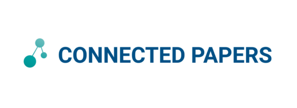
Connected Papers es una herramienta visual para mapear redes de literatura científica. A partir de un artículo semilla (seed paper), genera un grafo interactivo que muestra los artículos más relacionados usando análisis de co-citación y acoplamiento bibliográfico. Cada grafo analiza aproximadamente 50.000 papers para identificar las conexiones más relevantes.
Cómo leer el grafo
Funcionalidades
Base de datos y precios
Connected Papers toma sus datos de Semantic Scholar, con buena cobertura en ciencias naturales, ingeniería, informática y biomedicina.
Planes de Connected Papers
- Free: 5 grafos al mes.
- Academic y Business: planes de pago con más grafos; los precios están en su página.
Enlace: connectedpapers.com
14. Comparativa de herramientas de IA
La tabla compara las ocho herramientas de IA de esta guía con lo que ofrecen el 21 de noviembre de 2026:
| Plataforma | Fortalezas | Debilidades | Ideal para |
|---|---|---|---|
| ChatGPT | Deep Research, modo estudio, proyectos con archivos, GPT-6 | Puede inventar referencias; anuncios en el plan gratuito en algunos países | Exploración inicial, generación de ideas, estructuración de trabajos |
| Google Gemini | Integración con Drive, Gmail y Docs, multimodal, contexto de 1 millón de tokens en Pro | Depende del ecosistema de Google; los modelos más capaces son de pago | Usuarios de Google, análisis multimodal |
| Claude | Análisis de documentos largos, proyectos, búsqueda web y Research, pensamiento extendido | Research y los modelos más capaces son de pago | Análisis profundo de artículos, comparación de métodos, interpretación de datos |
| Perplexity | Citas en línea, modo académico, una investigación profunda al mes sin pagar | Análisis menos profundo que un asistente general | Verificación de datos, búsqueda con fuentes, respuestas rápidas con citas |
| SciSpace | Chat con PDF, agente de revisión, generador de citas | Puede sobreinterpretar hallazgos; cobertura desigual fuera de las ciencias | Lectura de artículos, citas, revisiones tipo PRISMA |
| Consensus | Solo literatura revisada por pares, más de 400 millones de artículos, Consensus Meter, Deep Search | Solo preguntas de investigación, sin análisis de documentos propios | Estado del arte, preguntas de sí o no sobre la evidencia |
| Connected Papers | Visualización de redes, Prior y Derivative Works, grafos con varias semillas | Solo mapea, sin analizar el contenido; depende de Semantic Scholar | Descubrir literatura relacionada, mapear un campo, encontrar los artículos fundacionales |
| Gemini Notebook | Responde solo con sus fuentes, resúmenes en audio y en video, tarjetas y cuestionarios | Solo analiza lo que usted sube; no busca en la web por sí solo, salvo con Deep Research | Sintetizar varios artículos, preparar exámenes, repasar material en audio |
Referencia rápida
| Herramienta | Mejor para | Plan gratuito | Primer plan de pago (USD al mes) | Literatura revisada por pares |
|---|---|---|---|---|
| ChatGPT | Exploración, estructuración | Sí, con anuncios en algunos países | Go: 8 en EE. UU., precio local en otros países | No exclusiva |
| Gemini | Ecosistema Google, multimodal | Sí | Google AI Plus: 4,99 | No exclusiva |
| Gemini Notebook | Sintetizar artículos, estudio | Sí (100 cuadernos) | Con Google AI Plus: 4,99 | Solo sus fuentes |
| Claude | Análisis de documentos | Sí | Pro: 20 | No exclusiva |
| Perplexity | Búsqueda con citas | Sí (una investigación profunda al mes) | Education Pro: 10 | Modo académico |
| SciSpace | Lectura de artículos, citas | Sí, con límites | En su página | Sí |
| Consensus | Evidencia sobre una pregunta | Sí (3 Deep Searches al mes) | En su página; 40 % de descuento para estudiantes | Sí, exclusiva |
| Connected Papers | Mapeo de literatura | Sí (5 grafos al mes) | En su página | Sí (Semantic Scholar) |
15. Flujo de trabajo recomendado
Combinar múltiples herramientas es la estrategia más efectiva para una revisión bibliográfica completa. El siguiente flujo integra plataformas clásicas y herramientas de IA:
Para el proyecto de Operaciones Unitarias, este flujo de trabajo le ayudará a encontrar datos de diseño, correlaciones empíricas y casos de estudio de procesos similares. Documente cada búsqueda en su bitácora de cálculo incluyendo la ecuación, la plataforma y la fecha.
16. Escala AIAS del curso
Cada actividad del curso dice qué nivel de la escala AIAS admite. Se usan los tres primeros; el 4 y el 5 no aplican.
| Nivel | Qué permite | Dónde aplica |
|---|---|---|
| 1 · Sin IA | No se permite el uso de IA. | Quices, exámenes, prelaboratorios y talleres en papel |
| 2 · IA para ideas | Generar ideas y estructurar el trabajo. | Taller 2, en Colab |
| 3 · IA para edición | Refinar la redacción y mejorar la claridad. | Memorandos de laboratorio, bitácoras, proyecto final y póster |
| 4 y 5 | Tareas resueltas con IA, o uso completo. | No aplican en el curso |
En las entregas de nivel 3, las herramientas de esta guía sirven para buscar, leer y resumir fuentes: encontrar artículos con Perplexity o Consensus, ordenar una lectura en Gemini Notebook o pedir una investigación profunda sobre un subtema. Lo que se entrega lo escribe y lo calcula su equipo, y la IA solo lo pule: los balances, el dimensionamiento, las decisiones de diseño y su justificación son suyos. Cada referencia que llegue por una IA se verifica en Google Scholar, Web of Science o Scopus antes de citarla, y se lee el artículo, no el resumen que hizo la herramienta. En las actividades de nivel 1 no se usa ninguna de estas herramientas.
En cada entrega su equipo declara qué herramientas usó, con qué propósito y cómo evaluó lo que produjeron. Una búsqueda con IA se declara como cualquier otra: la herramienta, la pregunta, la fecha y las fuentes que salieron de ella. En los memorandos de laboratorio, los datos salen de la hoja firmada en la práctica y de ninguna otra parte.
17. Conclusiones y recordatorios
Las herramientas de búsqueda bibliográfica cambian rápido. Google Scholar, Web of Science y Scopus siguen siendo la entrada a la literatura indexada de calidad, y ya traen asistentes de IA que acortan la búsqueda y el análisis.
Las herramientas de IA, por su parte, ya son agentes de investigación: buscan, leen, analizan y sintetizan literatura por su cuenta. Los Deep Research de ChatGPT, Gemini y Scopus AI, y el Research de Claude, entregan en minutos un informe con citas que antes tomaba días. Ese informe es un punto de partida: las fuentes se leen y se verifican.
- Verifique siempre las referencias que entregue una IA. Las alucinaciones son un riesgo real: confirme que cada artículo citado existe en Google Scholar, WoS o Scopus, y léalo antes de citarlo.
- No todas las herramientas de IA conocen la literatura reciente. Los modelos de lenguaje tienen una fecha de corte de entrenamiento, y no todas las herramientas buscan en la web; para lo más actual, busque directamente en las bases de datos.
- La IA complementa el análisis crítico y no lo reemplaza. Usted responde por la calidad de las fuentes, la validez de los métodos y la pertinencia de los hallazgos.
- Combine varias herramientas. Ninguna tiene toda la literatura: use al menos dos o tres plataformas.
- Documente sus búsquedas: la ecuación, la plataforma, la fecha y el número de resultados. Sin eso, nadie puede repetirlas.
- Declare el uso de IA en cada entrega, como pide la escala AIAS del curso (sección 16).
Buscar bien la literatura le va a servir toda la carrera, en la investigación, en la industria y en la consultoría. Las herramientas van a seguir cambiando; los principios se quedan: buscar con rigor, evaluar con criterio y documentar con transparencia.